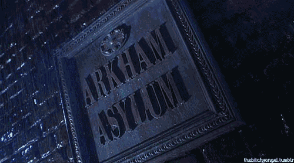
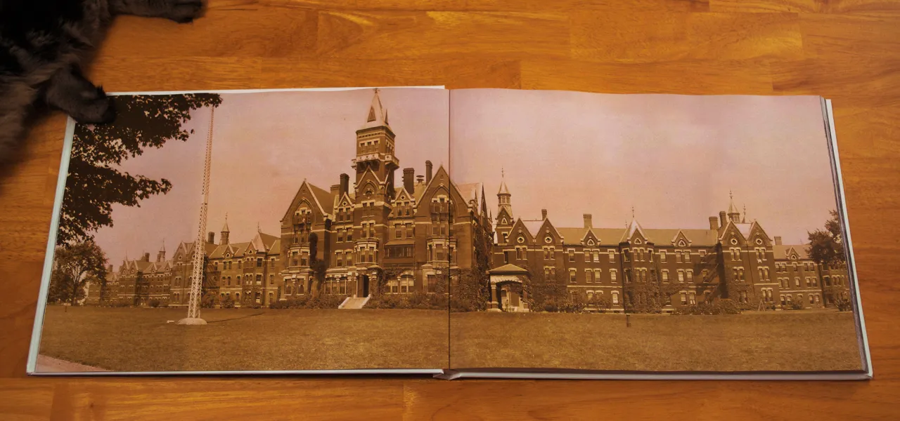

Sobre a Clínica...
| História |
| Missão |
| Valores |
História:
Fundada em 1878, a Clínica Psiquiátrica Arkham tem se dedicado ao cuidado e tratamento da saúde mental por mais de um século. Localizada em Rhode Island, nossa clínica combina a rica tradição de cuidados psiquiátricos com as mais avançadas práticas terapêuticas modernas. Nosso compromisso é oferecer um ambiente seguro, acolhedor e compassivo para todos os nossos pacientes.
Missão:
Nossa missão é promover o bem-estar mental e emocional de nossos pacientes, oferecendo tratamentos de alta qualidade e personalizados. Buscamos criar um ambiente onde cada indivíduo se sinta valorizado, respeitado e apoiado em sua jornada de recuperação e crescimento pessoal.
Valores:

- Compaixão:Tratamos todos os nossos pacientes com empatia, respeito e dignidade.
- Excelência:Comprometemo-nos com os mais altos padrões de qualidade em todos os aspectos de nosso trabalho.
- Inovação:Valorizamos a pesquisa e o desenvolvimento de novas técnicas terapêuticas para melhorar continuamente nossos serviços.
- Integridade:Mantemos a transparência e a honestidade em todas as nossas interações e práticas.
- Privacidade:Respeitamos e protegemos a confidencialidade de nossos pacientes, criando um ambiente seguro e confiável.